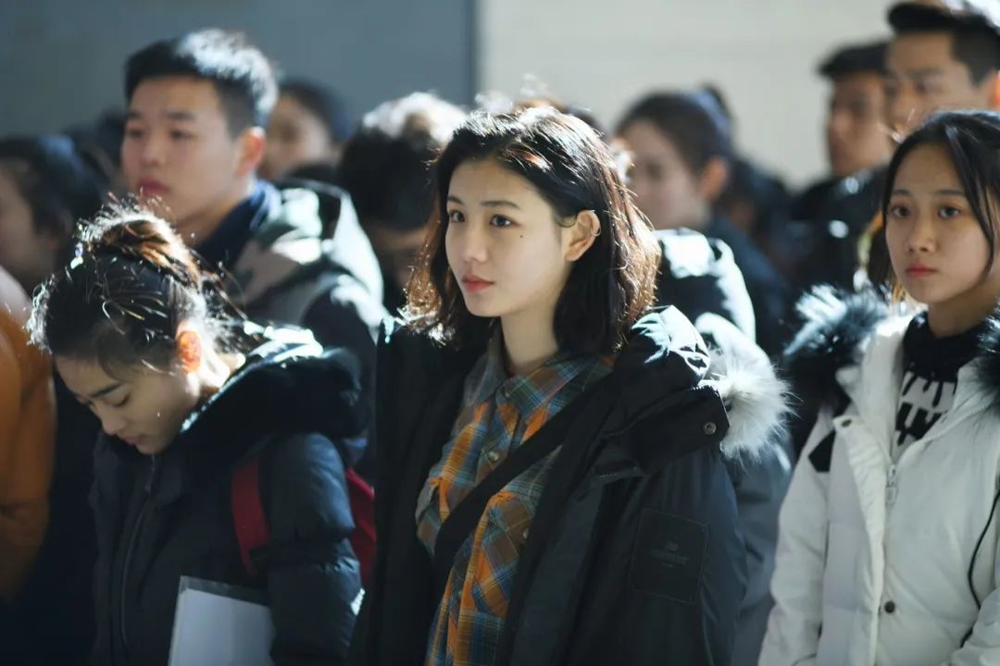

艺术类校考延期，艺培机构在找出路
原文链接 备份链接 以下文章来源于界面教育 ，作者柳书琪 [界面教育 独立思考 读懂教育 | 界面·财联社旗下教育频道](#) 图片来源：图虫 记者 | 柳书琪 “ 线下招生渠道受阻后，已有艺培机构开始重视在线招生。 ” 每年2月本是艺考 …

艺考生必须适应新的规则

疫情影响下，艺考不复往年的热闹。
自各大艺术类院校宣布推迟艺考时间后，日前教育部召开视频会议，指出原则上2020年高考前不组织现场校考。
与此同时，随着采用省级统考成绩、减少校考专业范围、按高考分数录取等举措的陆续出台，艺考迎来了史无前例的变化。
变化
教育受疫情影响，各类考试最先受到波及。教育部早在1月23日即发布通知，强调原则上不举办大型聚集性活动和考试等。
高考能否正常进行？这是疫情期间被频繁追问的话题。但更为急迫的是，按照往年的安排，艺术类招生考试校考的时间节点已经到了。
此前，已有多所艺术类院校相继宣布推迟艺考时间，央美、中戏、北影均在此列。
3月12日教育部召开视频会议指出，疫情防控形势逐步向好，为防止校考引发大规模人员流动和聚集，原则上2020年高考前不组织现场校考。
华中师范大学测量与评价中心主任胡向东表示，按照今年艺考的规模，如果加上陪考的家长，赴校考者预计将有200万人左右，无疑给正处于吃劲阶段的抗疫工作带来严重后果。
中国教育科学研究院研究员储朝晖也指出，当前疫情防控形势向好但依然严峻，人员流动和聚集受到限制，考场设置的防疫要求高，显然不宜让100多万名艺考生奔走于各校的考场。
仅一天后，中戏、中传、北影等八所院校迅速做出回应，对今年高考艺考工作展开安排。
消息一出，舆论沸腾，变化打破了艺考生专业课和文化课的平衡节奏，准备半年的专业考试推迟到高考后，大半年没准备的文化课却要先考。
不少艺考生反映，往年在院校公布成绩后，大家才踏实下来把注意力放到文化课上，现在顺序打乱，而且只能去上效率低下的网课，暴击成双。
还有不少艺考生按原计划在春节后赴各地艺考，随着艺考进入不确定状态，只好将原定的赴考车票和酒店取消，为此感到迷茫。
毋庸置疑，今年艺考还将面临诸多重大改革，艺考生必须适应新的规则。
质量
事实上，艺术类院校校考变化已有预兆。
2019年12月11日，教育部发布《严格规范做好2020年普通高校特殊类型招生工作》。
文件明确提出从2020年起，除了经教育部批准的独立设置的本科艺术院校仍可单独组织校考，其他高校的美术学类和设计学类专业将不再组织校考，而是统一使用省统考成绩。
截至目前，全国仅有河南省个别专业的统考测试尚未完成，其他省市的艺术类专业省考均已结束，基本可为各高校提供考生的专业测试成绩。
尤其值得关注的是，多所艺术类名校明确了部分专业取消校考、直接按照高考文化课成绩择优录取的规定，引发舆论热议。
中央戏剧学院表示，部分专业可考虑取消专业考试，按照高考文化课成绩由高到低录取。北京电影学院也提出，部分专业取消专业校考，直接按照高考成绩择优录取。
近年来，艺考热不免成为人们眼中“投机考学”的代名词，被贴上“走捷径”的标签。
2018年底教育部发文指出，各地各高校要按照“择优录取、宁缺毋滥”的原则，进一步提高相关考生的专项测试要求和文化课成绩录取要求。
今年，中国传媒大学将艺术类专业考试的初试定为文化素养基础测试，只考“文史哲”科目，引导考生更加重视人文素养的养成。
中国传媒大学校长廖祥忠表示，艺考改革得到了考生、家长及社会的高度认可，报考人数和初试参考率连创新高，考生质量明显提升。
方向
艺考之变，是权宜之计，还是未来趋势？
人民日报评论道，疫情当前，采用省级统考成绩、减少校考专业范围，看似应急之举，实则改革之需。近年来，艺术类考试招生改革的重点，就是引导社会理性看待“艺考热”。
胡向东指出，缩减校考专业和规模却并不只是单纯为了抗击疫情而被迫采取的措施，它是艺术类专业招生考试发展的大势所趋。
当然，储朝晖跟中国新闻周刊指出，不同的专业情况可能不一样，“如果是真正的艺术人才培养，不主张采用省统考这样的方式。”
他说，“真正的艺术人才一定是极其个性化的，个性化统考难以有效衡量，必须通过个性化的人才评价，这在世界各国的教育评价中皆如此。”
储朝晖认为，艺考改革跟高等学校招生评价改革的大方向是一致的，就是要进行更加专业、公开、透明的评价。“ 最关键的，一定要是专业的人来进行评价，而不是外行的人。”
总的来说，特殊年份的艺考将给考生留下特殊的记忆，但不管招考方式如何调整，都不能影响人才选拔的公平性和科学性。
储朝晖指出，考核环境、方式及其他条件的变化，会引发事先难以完全考虑周到的新问题，每个问题对于高校而言未必是多大的事，对于考生而言可能就是决定命运走向的大事。
那么变化之下如何确保公平公正？储朝晖告诉中国新闻周刊，这确实是一个难题，“最关键的，是高校必须保持对每位考生基本权利的尊重。”
当然，储朝晖谈到，各个学校因为能力所限或者各方面条件的限制，能不能做到这一点也只有在实践当中去检验去考察。
参考资料：
值班编辑：石若萧
推荐阅读
▼


原文链接 备份链接 以下文章来源于界面教育 ，作者柳书琪 [界面教育 独立思考 读懂教育 | 界面·财联社旗下教育频道](#) 图片来源：图虫 记者 | 柳书琪 “ 线下招生渠道受阻后，已有艺培机构开始重视在线招生。 ” 每年2月本是艺考 …
原文链接 备份链接 进一步减税降费、提高赤字率至3%或3%以上、大幅提高地方政府专项债券额度、发行特别国债、大力推动“新基建”投资等五项扩张性财政政策呼声渐高，有望在更大范围和更高层面逐步形成共识 图/视觉中国 文 |《财经》 …
原文链接 备份链接 *************▲ *************疫情期间，封城封路、酒店停业、社会焦点转移等因素使家暴受害者的求助之路变得更为艰难。 （南方周末记者 翁洹/图） 全文共4950字，阅读大约需要10分钟。 湖 …
原文链接 备份链接 燃财经（ID:rancaijing）原创 作者 | 金玙璠 编辑 | 魏佳 疫情以来，所有企业都在喊“太难了”，但在苹果公司面前这都不算事儿。 当地时间3月18日，美股低开不断下挫，盘中标普500指数达7%，触发10 …
原文链接 备份链接 “三月赏樱唯有武大。” 武大的樱花一向是武汉初春的胜景，一般始于3月中旬，历时2到3周。每到那时，数万名游客蜂拥而至，然而由于今年新冠肺炎疫情的暴发，无论是本地的居民，还是外地的游客，都无缘于此。 基于这样的情况，3 …